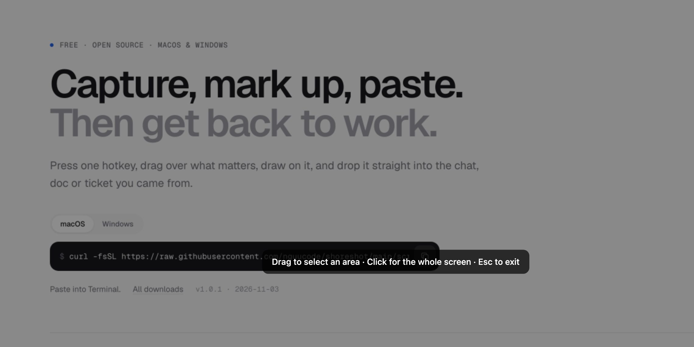
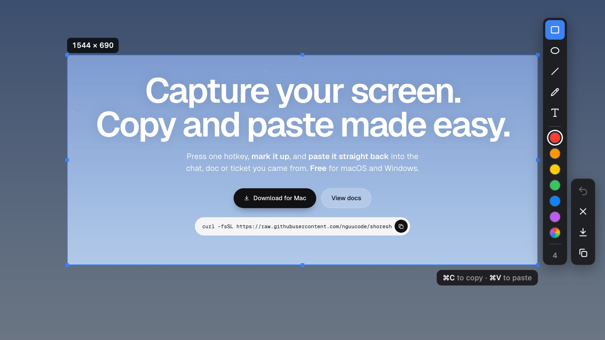
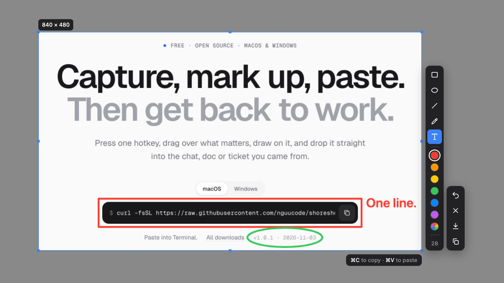

Capture, mark up, paste. Then get back to work.
Press one hotkey, drag over what matters, draw on it, and drop it straight into the chat, doc or ticket you came from.
curl -fsSL https://raw.githubusercontent.com/nguucode/shoreshot/main/scripts/install.sh | bash



Built for the five-second screenshot.
Everything a screenshot needs, and nothing that slows it down.
Area, window or full screen
Drag a region, click a window, or take the whole display. Each mode gets its own hotkey.
Opens on the keypress
The capture window is loaded before you need it, so the frame is there the moment you press.
Five tools, six colours
Rectangle, ellipse, line, pen and text. Scroll to change the stroke or the font size.
Paste where you were
⌘V copies the capture and pastes it into the app you came from.
Change your mind
Hover a shape and press ⌫ to remove it. Undo, redo, click text to edit it.
Stays on your machine
No account, no upload, no tracking. The only request is the update check to GitHub.
Keys, not menus.
Every action has a key. On Windows, use Ctrl instead of ⌘. Full screen and window capture get their hotkeys in Settings.
Questions.
Permissions, installs and updates.
Is it really free?
Yes. ShoreShot is open source under the MIT license. No paid tier, no account.
Why does macOS ask for Screen Recording?
Every app that reads the screen needs it. Turn on ShoreShot in System Settings › Privacy & Security › Screen & System Audio Recording, then choose “Quit & Reopen”.
Why does it ask for Accessibility?
Only for ⌘V, which pastes into another app for you. Copy, save and drawing work without it.
macOS says the app “is damaged”
The app is not notarized by Apple. The install command avoids this. If you used the .dmg, run this once:
xattr -cr /Applications/ShoreShot.app
Windows shows a SmartScreen warning
The installer is not code-signed. Click More info › Run anyway, or use the PowerShell command.
How do I update?
Run the install command again. ShoreShot also tells you when a new version is out.
How do I uninstall?
macOS:
curl -fsSL https://raw.githubusercontent.com/nguucode/shoreshot/main/scripts/install.sh | bash -s -- --uninstall
Windows (PowerShell):
& ([scriptblock]::Create((irm https://raw.githubusercontent.com/nguucode/shoreshot/main/scripts/install.ps1))) -Uninstall